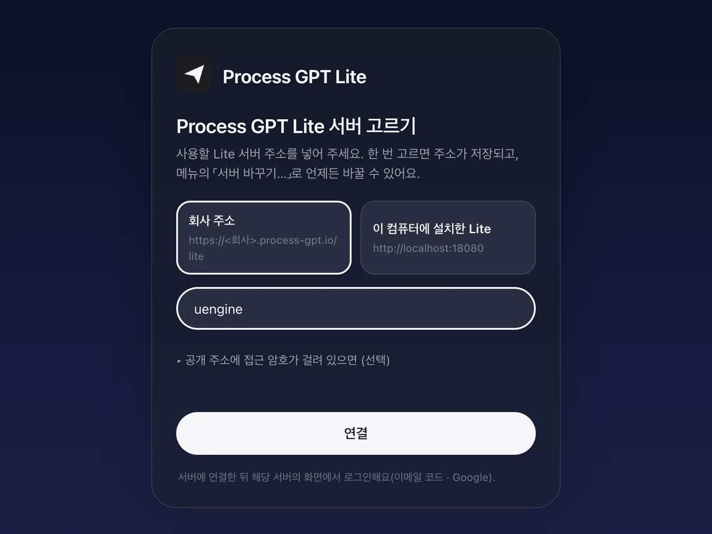
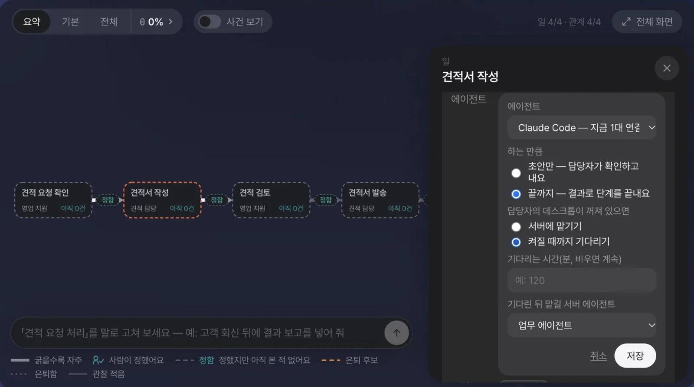
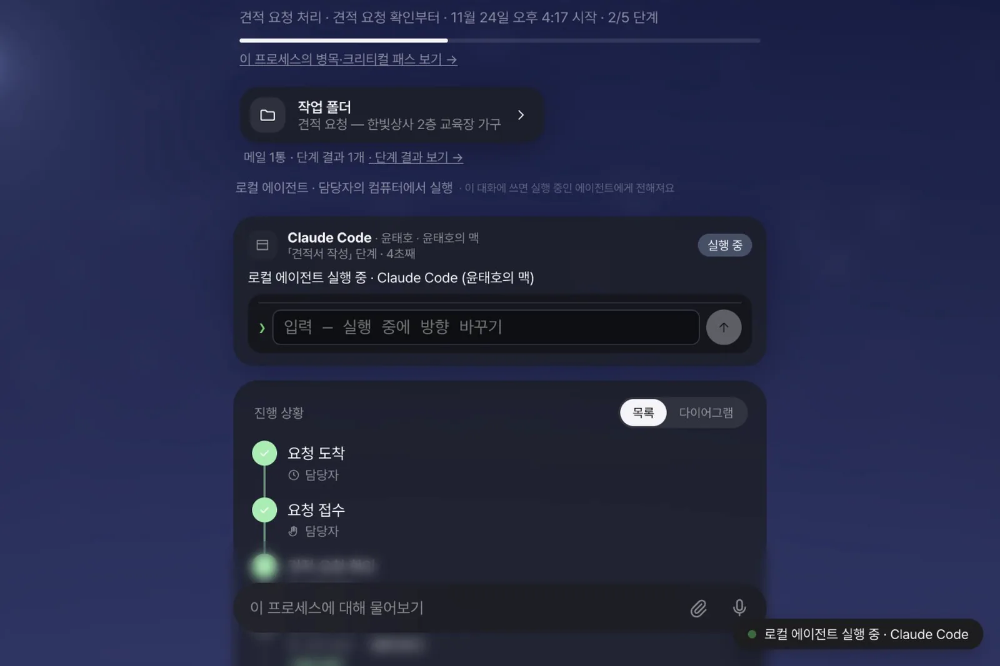
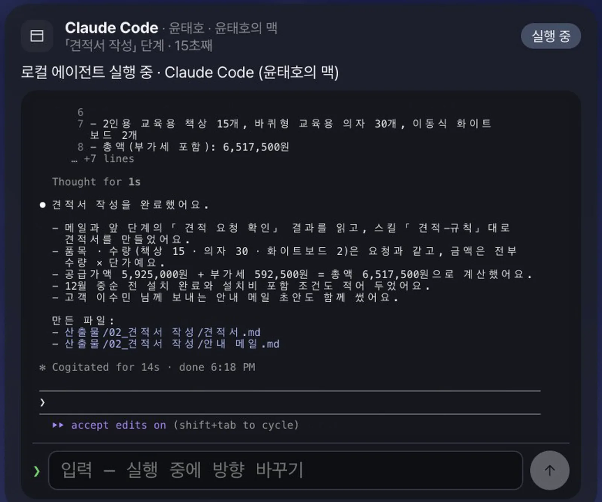
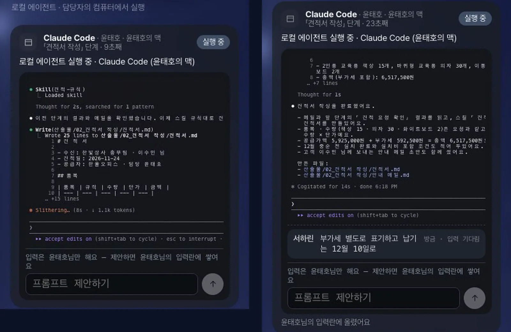
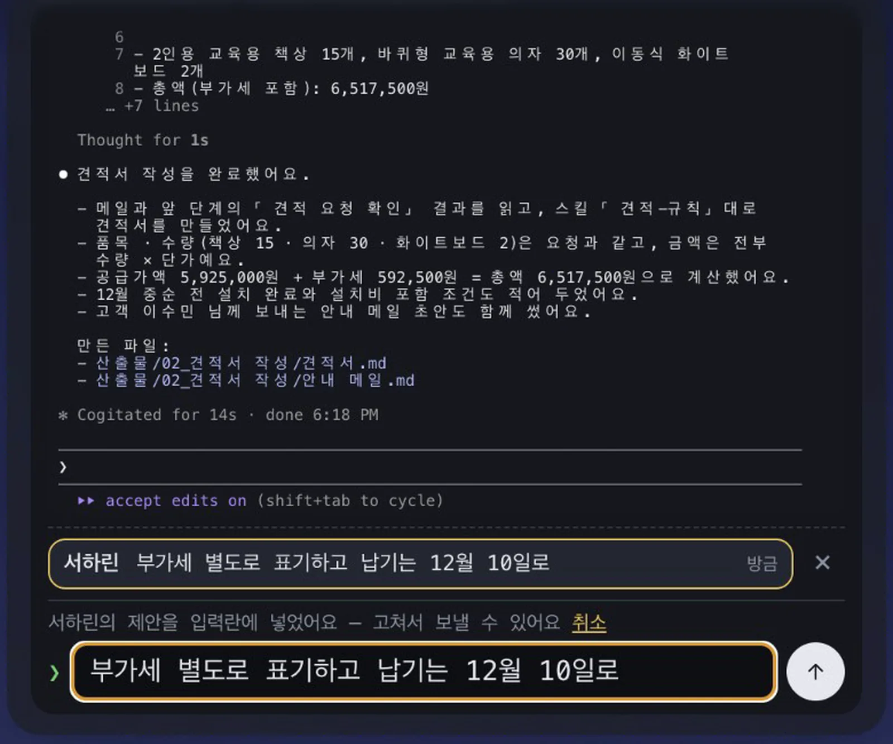
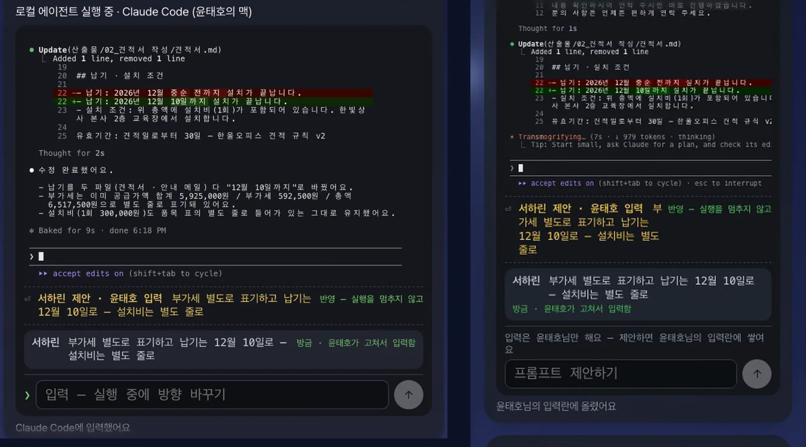
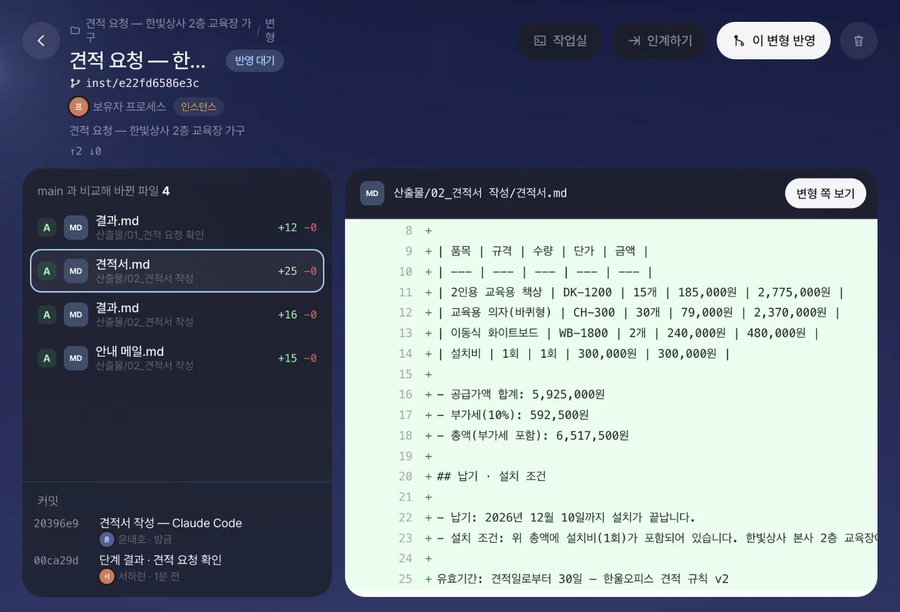
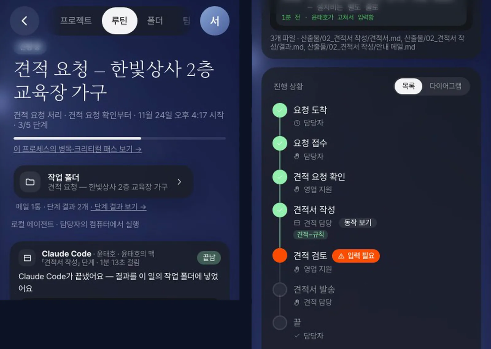
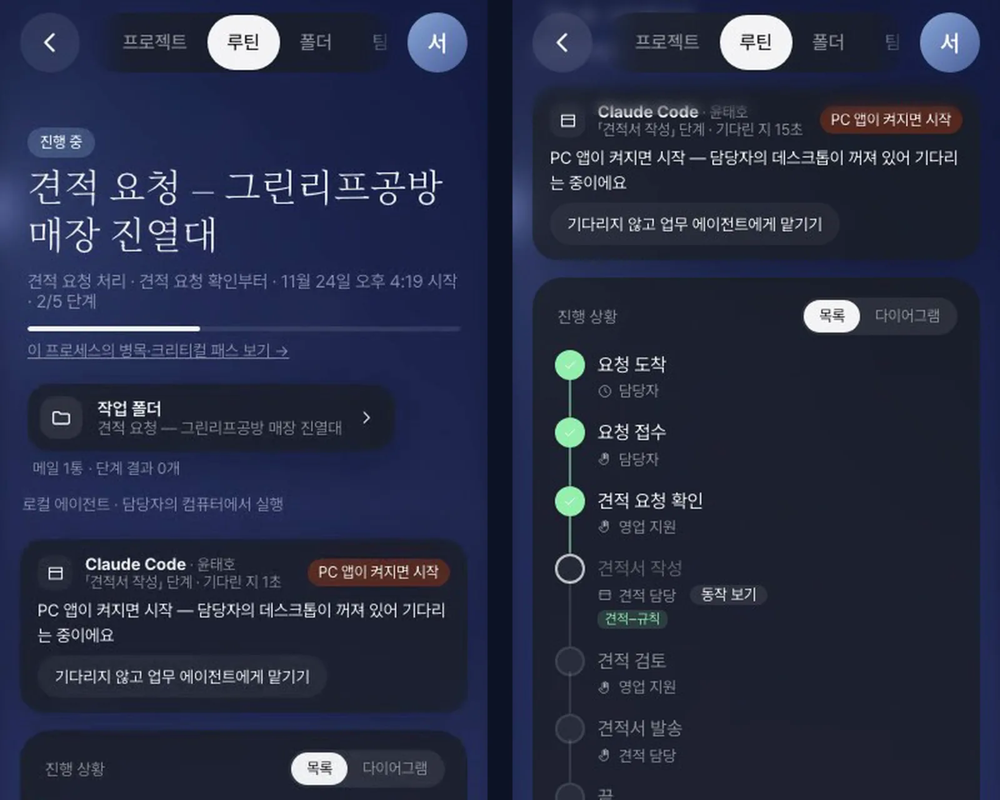

데스크톱 앱을 켜 두면, 프로세스 지도에서 「담당자의 컴퓨터」 에이전트로 지정한 단계가 담당자에게 올 때 해당 PC의 Claude Code나 Codex가 담당자의 계정으로 실행됩니다. 작업 폴더는 git으로 서버와 동기화되고, 동료는 웹이나 휴대폰에서 같은 터미널을 보며 프롬프트를 제안합니다. 입력은 해당 PC의 주인만 합니다.
▶ 프로세스 단계를 내 PC의 Claude Code가 실행하고, 동료는 휴대폰에서 같은 터미널을 보며 제안 · 2:32
24장에서는 서버의 코딩 에이전트 실행 서비스가 Claude Code·Codex 단계를 실행했고, 사람은 작업실에서 그 세션을 이어서 봤습니다. 이 장에서는 같은 단계를 담당자 자신의 PC에서 실행합니다. 사무용 가구 회사 한울오피스의 견적 담당 윤태호(관리자)는 데스크톱 앱으로, 영업 지원 서하린은 휴대폰으로 함께 견적 한 건을 처리합니다. 고객은 한빛상사이고, 요청한 품목은 2층 교육장 가구입니다.
무엇을#
- 회사 프로세스 지도(20장)의 일마다 담당할 에이전트를 정합니다. 서버의 업무 에이전트 또는 담당자의 컴퓨터에 있는 Claude Code·Codex 가운데 하나입니다.
- 담당자의 컴퓨터로 지정한 단계가 해당 담당자에게 오면, 켜져 있는 데스크톱 앱이 담당자의 대화형 CLI를 앱 안의 터미널에 띄웁니다.
- 시작하기 전에 앱은 해당 건의 작업 폴더를 서버에서 받아 이전 담당자의 결과를 이어받고, 회사 스킬도 받아 둡니다. 끝나면 결과를 담당자 이름으로 커밋해 올리고, 다음 단계는 다음 담당자에게 넘깁니다.
- 해당 건의 참여자는 어느 기기에서든 같은 터미널을 실시간으로 보고 프롬프트를 제안합니다. 제안을 실제로 입력할 수 있는 사람은 해당 CLI를 가진 사람뿐입니다.
왜#
| 서버에서 실행할 때(24장) | 내 PC에서 실행할 때(이 장) | |
|---|---|---|
| 계정 | 서버에 로그인한 계정 하나를 여러 사람이 함께 사용 | 사람마다 자기 계정과 구독 사용 |
| 부하 | CLI와 그 프로세스가 서버에서 실행됨 | 각자의 PC에서 실행됨. 서버는 단계를 배분하고 화면을 중계 |
| 설정과 스킬 | 서버에 설치된 설정 | 자기 터미널에서 쓰던 로그인·설정·슬래시 명령을 그대로 사용하고, 회사 스킬도 함께 사용 |
| 함께 일하기 | 작업실에서 이어서 봄 | 작업 폴더를 git으로 동기화하고, 동료는 보면서 제안하며, 입력은 주인만 수행 |
Claude Code·Codex 같은 CLI의 구독 계정은 사람마다 따로 쓰는 것이 원칙입니다. 서버 한 곳에서 여러 사람이 계정 하나를 나눠 쓰면 이용 약관에 어긋날 수 있고, 사람이 늘수록 서버 부하도 커집니다. 각자의 PC에서 자기 계정으로 실행하면 두 문제가 함께 사라지고, 평소 쓰던 자기 Claude Code를 그대로 쓸 수 있습니다.
준비#
| 항목 | 내용 |
|---|---|
| 데스크톱 앱 | Process GPT Lite 데스크톱 앱 0.2.0 — macOS(Apple Silicon·Intel), Windows 10·11 64비트 |
| CLI | Claude Code 2.1.331 이상 또는 Codex가 해당 PC에 설치되어 로그인된 상태 |
| git | macOS는 처음 사용할 때 설치 여부를 묻습니다. Windows는 Git for Windows를 설치합니다 |
| 회사 프로세스 지도 | 「견적 요청 처리」: 견적 요청 확인(영업 지원) → 견적서 작성(견적 담당) → 견적 검토(영업 지원) → 견적서 발송(견적 담당). 「견적서 작성」 일에는 회사 스킬 「견적-규칙」이 지정되어 있습니다 |
| 등장인물 | 견적 담당 윤태호(관리자, 맥의 데스크톱 앱), 영업 지원 서하린(휴대폰 브라우저) |
따라 하기 1 — 데스크톱 앱을 설치하고 회사에 연결하기#
내려받을 파일은 세 가지입니다(버전 0.2.0).
| 컴퓨터 | 파일 |
|---|---|
| Mac(Apple Silicon: M1 이후) | Process-GPT-Lite-0.2.0-mac-arm64.dmg |
| Mac(Intel) | Process-GPT-Lite-0.2.0-mac-x64.dmg |
| Windows 10·11(64비트) | Process-GPT-Lite-0.2.0-win-x64-setup.exe |
zip 파일과 릴리스 노트는 릴리스 페이지에 있습니다.
- 위 표에서 내 PC에 맞는 파일을 내려받습니다. Mac의 종류는 Apple(사과) 메뉴 › 이 Mac에 관하여의 「칩」(Apple M…이면 Apple Silicon) 또는 「프로세서」(Intel)에서 확인합니다.
- macOS — DMG를 열고
Process GPT Lite를 「응용 프로그램」으로 끌어 놓습니다. 처음 열면 「"Process GPT Lite"을(를) 열 수 없습니다 … 확인할 수 없습니다」가 뜹니다. 「완료」를 누르고 시스템 설정 › 개인정보 보호 및 보안 맨 아래의 「"Process GPT Lite"이(가) 차단되었습니다」 옆 「그래도 열기」를 누릅니다. 다시 묻는 창에서도 「그래도 열기」를 누릅니다. 한 번만 하면 됩니다. - Windows —
…-win-x64-setup.exe를 실행합니다. Microsoft Defender SmartScreen이 「Windows의 PC 보호」를 띄우면 「추가 정보」를 누른 뒤 「실행」을 누릅니다. 현재 사용자만 쓰도록 설치하므로 관리자 권한을 묻지 않습니다. 시작 메뉴와 바탕 화면에Process GPT Lite가 생깁니다. - 앱을 처음 켜면 「Process GPT Lite 서버 고르기」가 나옵니다. 「회사 주소」를 고르고 회사 이름만 입력한 뒤 「연결」을 누릅니다.
uengine이라고 입력하면https://uengine.process-gpt.io/lite로 연결됩니다. 사내에 설치한 Lite라면 주소를 그대로 입력하고, 이 PC에 설치했다면 「이 컴퓨터에 설치한 Lite」(http://localhost:18080)를 고릅니다. 주소는 저장되며, 메뉴의 「서버 바꾸기…」에서 언제든 바꿀 수 있습니다.
데스크톱 앱의 첫 화면 「Process GPT Lite 서버 고르기」 — 「회사 주소」를 고르고 회사 이름만 입력하면 됩니다 - 연결되면 해당 서버의 화면이 앱 창에 열립니다. 평소처럼 로그인합니다(이메일 코드·Google). 로그인하면 앱이 이 PC를 서버에 자동으로 연결합니다. 설정 › 계정 › 「내 컴퓨터의 에이전트」에서 「이 컴퓨터 · 연결됨」과 Claude Code·Codex 각각의 버전 및 로그인 상태(「로그인됨」·「로그인 필요」·「설치돼 있지 않아요」)를 확인합니다. CLI를 방금 설치했다면 「다시 찾기」를 누릅니다.
처음 한 번 뜨는 확인 창
데스크톱 앱은 아직 Apple 개발자 서명·공증과 Windows 코드 서명을 받지 않았습니다. 그래서 처음 열 때 macOS와 Windows가 한 번씩 확인을 요청합니다. 앱은 서버 쪽으로만 연결하고, 이 PC에 포트를 열지 않습니다.
따라 하기 2 — 일마다 에이전트 정하기(관리자)#
- 윤태호(관리자)로 회사 프로세스 지도를 열고 「견적 요청 처리」를 고른 뒤 견적서 작성 상자를 누릅니다. 오른쪽에 일 패널이 열립니다.
- 「에이전트」 줄의 바꾸기를 누르고 「에이전트」 목록을 엽니다. 「서버」 묶음에는 「업무 에이전트」가, 「담당자의 컴퓨터 (데스크톱 앱)」 묶음에는 Claude Code·Codex·OpenHands가 있습니다. 회사의 데스크톱 앱이 설치되어 있다고 알린 CLI만 고를 수 있습니다. 윤태호의 앱이 연결되어 있으므로 「Claude Code — 지금 1대 연결됨」을 고릅니다. 어떤 앱에서도 알리지 않은 CLI에는 「아직 알린 데스크톱이 없어요」가 붙습니다.
- 「하는 만큼」에서 「초안만 — 담당자가 확인하고 내요」 또는 「끝까지 — 결과로 단계를 끝내요」를 고릅니다. 실습에서는 끝까지를 고릅니다.
- 「담당자의 데스크톱이 꺼져 있으면」에서 「서버에 맡기기」 또는 「켜질 때까지 기다리기」를 고릅니다. 기다리기를 고르면 「기다리는 시간(분, 비우면 계속)」과 「기다린 뒤 맡길 서버 에이전트」가 나옵니다. 실습에서는 켜질 때까지 기다리기를 고르고 시간은 비워 둡니다.
- 저장을 누르면 에이전트 줄이 「Claude Code · 담당자의 컴퓨터 · 끝까지 · 꺼져 있으면 켜질 때까지 기다리기」로 바뀌고, 「저장했어요. 다음에 열리는 단계부터 이 에이전트로 실행해요.」가 보입니다.

따라 하기 3 — 단계가 내 PC로 옵니다#
- 한빛상사의 견적 요청으로 건 「견적 요청 — 한빛상사 2층 교육장 가구」가 열려 있습니다. 서하린이 「견적 요청 확인」을 끝내면 다음 단계인 「견적서 작성」이 견적 담당 윤태호에게 갑니다.
- 윤태호의 앱이 켜져 있으므로 단계는 윤태호의 PC로 옵니다. 앱은 먼저 이 건의 작업 폴더를 서버에서 받습니다. 폴더에는 이전 담당자가 남긴 요청 메일과 「견적 요청 확인」 결과가 있습니다. 회사 스킬 「견적-규칙」도 서버의 스킬 폴더에서 최신본을 받아 Claude Code가 읽는 위치에 둡니다.
- 윤태호의 건 화면에 실행 카드가 생깁니다. 카드에는 「Claude Code · 윤태호 · 윤태호의 맥」, 「「견적서 작성」 단계 · 4초째」, 「실행 중」이 표시됩니다. 작업 폴더 줄은 「메일 1통 · 단계 결과 1개」로 바뀌고, 앱 오른쪽 아래에는 「로컬 에이전트 실행 중 · Claude Code」가 뜹니다. 잠시 뒤 카드에 터미널이 나타납니다.

따라 하기 4 — 앱 안의 터미널에서 일하는 Claude Code#
- 카드 안의 터미널에 윤태호 PC의 대화형 Claude Code가 뜹니다. 윤태호가 자기 터미널에서 열었을 때처럼 윤태호의 로그인과 설정으로 실행됩니다. 앱은 해당 일의 정의, 지켜야 할 것, 내놓는 것, 작업 폴더의 메일과 이전 단계 결과, 받은 스킬을 담은 프롬프트를 붙여 넣습니다.
- Claude Code가 스킬을 불러오고(
Skill(견적-규칙)), 메일과 이전 단계 결과를 읽은 뒤산출물/02_견적서 작성/견적서.md와안내 메일.md를 작성합니다. 작업 폴더 안의 파일을 고칠 때는 묻지 않습니다. - 첫 턴이 끝나면 수행한 일을 요약합니다. 「견적서 작성을 완료했어요.」 공급가액 5,925,000원과 부가세 592,500원을 더한 총액 6,517,500원, 「12월 중순 전 설치 완료」 조건, 고객에게 보낼 안내 메일 초안까지 작성했습니다.

윤태호는 이 터미널에 직접 입력하거나 카드 아래 「입력 — 실행 중에 방향 바꾸기」 칸에서 보낼 수 있습니다. Claude Code가 권한 확인 등으로 사람의 응답을 기다리면 데스크톱에 알림이 뜹니다.
따라 하기 5 — 동료가 휴대폰으로 보고 제안하기#
- 서하린이 휴대폰 브라우저로 같은 건을 엽니다. 같은 실행 카드와 터미널이 새로 고침 없이 실시간으로 보입니다. 윤태호의 PC에서 실행 중인 바로 그 화면입니다. 서하린의 터미널은 읽기 전용이라 커서도 키도 없습니다.
- 카드 아래에는 입력란 대신 「입력은 윤태호님만 해요 — 제안하면 윤태호님의 입력란에 쌓여요」와 프롬프트 제안하기 칸이 있습니다.
- 서하린이
부가세 별도로 표기하고 납기는 12월 10일로라고 적어 보냅니다. Claude Code에는 아무것도 입력되지 않습니다. 서하린의 화면에는 제안이 「방금 · 입력 기다림」으로 남고, 「윤태호님의 입력란에 올렸어요」가 보입니다.

따라 하기 6 — 주인이 제안을 골라 고쳐서 입력하기#
- 윤태호의 화면에서 터미널 입력란 위에 칩 「서하린 부가세 별도로 표기하고 납기는 12월 10일로 · 방금」이 쌓입니다. 데스크톱에 알림이 뜨고, 홈에도 이 건의 카드가 생깁니다.
- 칩을 누르면 내용이 입력란에 들어가고, 「서하린의 제안을 입력란에 넣었어요 — 고쳐서 보낼 수 있어요」가 표시됩니다. 필요 없는 제안은 칩 옆의 ✕로 버립니다.

- 윤태호는 뒤에
— 설치비는 별도 줄로를 덧붙여 보냅니다. 앱은 사람이 붙여 넣듯 같은 Claude Code 세션에 해당 내용을 입력합니다. 입력 목록에 「서하린 제안 · 윤태호 입력」과 「반영 — 실행을 멈추지 않고」가 남습니다. - Claude Code는 같은 세션에서 방금 작성한 견적서와 안내 메일을 고칩니다. 납기가 「12월 중순 전까지」에서 「12월 10일까지」로 바뀝니다. 부가세는 이미 따로 적혀 있었고, 설치비도 표의 별도 줄에 있어 그대로 두었다고 답합니다.
- 서하린의 휴대폰에서는 제안이 「윤태호가 고쳐서 입력함」으로 바뀝니다.

따라 하기 7 — 결과는 인스턴스 라인으로, 다음 단계는 다음 사람에게#
- 윤태호가 실행 카드의 끝내기를 누르면 단계가 끝납니다. 누르지 않아도 몇 분 동안 새 입력이 없으면 끝납니다. 앱은 바뀐 파일을 윤태호의 이름으로 커밋해 서버에 올립니다. 서버는 이를 이 건의 작업 폴더에 있는 인스턴스 라인에 넣습니다.
- 실행 카드는 「끝남 · Claude Code가 끝냈어요 — 결과를 이 일의 작업 폴더에 넣었어요」로 바뀌고, 건은 3/5 단계로 넘어갑니다. 작업 폴더 줄에는 「메일 1통 · 단계 결과 2개 · 단계 결과 보기 →」가 표시됩니다.
- 단계 결과 보기 →를 누르면 인스턴스 라인이 열립니다. 「main 과 비교해 바뀐 파일 4」, 즉 서하린의 「견적 요청 확인」 결과와 윤태호의 견적서·안내 메일·결과가 보입니다. 커밋은 「견적서 작성 — Claude Code」(윤태호)와 「단계 결과 · 견적 요청 확인」(서하린)입니다. 견적서에는 부가세(10%) 592,500원이 따로 적혀 있고, 납기는 2026년 12월 10일입니다. git으로 관리하므로 누가 무엇을 바꿨는지 기록이 남습니다.

- 다음 단계 「견적 검토」는 서하린의 차례입니다. 서하린의 휴대폰 진행 상황에 「견적 검토 · 입력 필요」가 뜹니다. 같은 작업 폴더에서 일을 이어 갑니다. 다음 단계도 누군가의 PC에서 실행된다면 해당 PC는 시작하기 전에 이 라인을 먼저 받아 옵니다.

따라 하기 8 — PC 앱이 꺼져 있을 때#
- 윤태호가 앱을 끈 사이 새 건 「견적 요청 — 그린리프공방 매장 진열대」가 「견적서 작성」 단계에 이릅니다. 활동 설정이 「켜질 때까지 기다리기」이므로 단계는 대기합니다. 실행 카드에 「Claude Code · 윤태호」, 「「견적서 작성」 단계 · 기다린 지 1초」, 「PC 앱이 켜지면 시작 — 담당자의 데스크톱이 꺼져 있어 기다리는 중이에요」가 보입니다.
- 윤태호가 앱을 켜면 기다리던 일이 오래된 것부터 차례로 실행됩니다.
- 기다리지 않으려면 카드의 기다리지 않고 업무 에이전트에게 맡기기를 누릅니다. 작업자와 해당 일을 수정할 수 있는 사람이 누를 수 있으며, 휴대폰에서도 가능합니다. 기다리는 시간을 정해 두었다면 그 시간이 지나면 서버 에이전트가 맡습니다. 「서버에 맡기기」로 정한 일은 처음부터 업무 에이전트가 맡습니다.

알아 둘 점#
무엇이 어디서 실행되나요
| 무엇 | 어디서 |
|---|---|
| Claude Code·Codex 실행과 모델 호출 | 담당자의 PC, 해당 담당자의 계정 |
| 작업 폴더의 사본 | 담당자 PC의 앱 데이터 폴더, 건마다 하나(git) |
| 작업 폴더의 기준본과 인스턴스 라인 | 서버 |
| 회사 스킬의 원본 | 서버의 스킬 폴더. 실행할 때마다 최신본을 읽기 전용으로 받고, 결과에는 넣지 않음 |
| 터미널 화면 중계, 제안, 알림 | 서버를 거쳐 해당 건을 볼 수 있는 모든 사람에게 전달 |
| 꺼져 있을 때 맡는 업무 에이전트 | 서버 |
누가 무엇을 할 수 있나요
| 사람 | 할 수 있는 것 | 할 수 없는 것 |
|---|---|---|
| 작업자(해당 CLI를 가진 사람) | 터미널에 직접 입력, 입력란에서 보내기, 제안을 골라 고쳐 입력하기·버리기, 「끝내기」 | — |
| 해당 건의 참여자 | 같은 터미널 보기(읽기 전용), 프롬프트 제안 | 터미널·입력란에 입력, 제안 버리기 |
| 해당 건에 참여하지 않는 사람 | — | 실행 카드·터미널·제안 모두 |
| 관리자 | 일마다 에이전트와 「꺼져 있으면」 설정 바꾸기 | 다른 사람의 CLI에 입력 |
단계가 끝나는 때 — 작업자가 「끝내기」를 누르거나 몇 분 동안 새 입력이 없으면 끝납니다. 그 전에 보낸 입력은 같은 세션의 다음 턴으로 들어갑니다. 반영되기 전에 단계가 끝나면 해당 입력에 「못 함」과 이유가 표시됩니다. 실행 중에 앱이 꺼졌다가 다시 켜지면 같은 세션을 이어서 끝냅니다.
내 컴퓨터의 에이전트 설정 — 「이 컴퓨터에서 단계 실행」을 끄면 이 PC로 단계가 오지 않고, 활동 설정에 따라 서버에 맡기거나 기다립니다. 「실행 전에 묻기」를 켜면 단계가 올 때마다 확인 창이 뜨고, 「이번에는 하지 않기」를 고르면 서버 에이전트가 맡습니다. 「연결 해제」를 누르면 해당 PC의 연결이 바로 끊기며, 로그아웃해도 끊깁니다.
이 장의 화면
화면은 macOS의 데스크톱 앱과 실제 Claude Code 2.1.331로 촬영했습니다. 사람과 회사, 고객의 이름은 모두 지어냈습니다. Codex와 Windows에서도 같은 방식으로 실행되도록 만들었지만, 대화형 Codex와 Windows에서 단계를 끝까지 실행하는지는 아직 확인하지 않았습니다.
다음 장에서는 채팅·편집기·작업실과 데스크톱 앱이 서버 안에서 어떻게 연결되는지, Process GPT Lite의 구조를 한 장의 그림으로 살펴봅니다(26장).
확인 문제
- 서하린이 휴대폰에서 윤태호의 Claude Code에 「목차를 맨 앞에」를 입력하고 싶습니다. 터미널에 직접 입력할 수 있나요? 어떻게 해야 하나요?
- 윤태호의 앱이 꺼져 있을 때 「견적서 작성」 단계가 옵니다. 활동 설정이 「켜질 때까지 기다리기」일 때와 「서버에 맡기기」일 때 각각 어떻게 되나요?
- 회사 스킬 「견적-규칙」을 고쳐 스킬 폴더에 반영했습니다. 다음 「견적서 작성」 실행에서는 고친 스킬을 쓰나요? 해당 스킬 파일이 인스턴스 라인에 들어가나요?
답
- 직접 입력할 수 없습니다. 작업자가 아닌 사람의 터미널은 읽기 전용이고, 서버도 해당 입력을 버립니다. 「프롬프트 제안하기」로 제안하면 윤태호의 입력란 위에 칩으로 쌓이고, 윤태호가 골라 고쳐서 입력하거나 버립니다.
- 「켜질 때까지 기다리기」이면 단계가 「PC 앱이 켜지면 시작」으로 대기하다가, 앱이 켜지면 윤태호의 PC에서 실행됩니다. 기다리는 시간을 정했다면 그 시간이 지나거나 「기다리지 않고 업무 에이전트에게 맡기기」를 누르면 서버 에이전트가 맡습니다. 「서버에 맡기기」이면 처음부터 업무 에이전트가 맡습니다.
- 씁니다. 앱은 실행할 때마다 서버의 스킬 폴더에서 최신본을 받습니다. 받은 스킬은 Claude Code가 읽는 위치에만 두고 결과 커밋에는 넣지 않으므로, 인스턴스 라인에는 들어가지 않습니다.